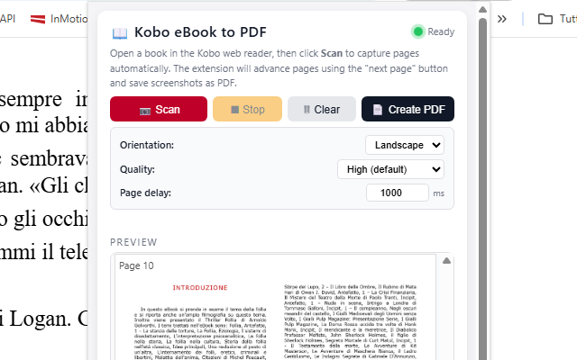
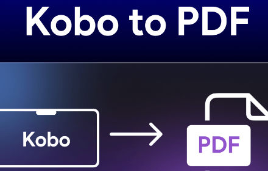

Kobo eBook to PDF Saver
Save your Kobo eBooks as high-quality PDF documents 📖. With Kobo eBook to PDF Saver, you can capture every page from the Kobo web reader and export them into a single, beautifully formatted PDF file — perfect for offline reading, personal backups, or archiving your digital library.
No complicated software, no manual screenshots, no tedious copy-pasting. The extension handles everything automatically — it captures each page as a high-resolution screenshot, advances to the next page, and repeats until the entire book (or section) is captured. When the scan is complete, it compiles all pages into a single PDF document ready for download.
One of the standout features is Smart Preview Detection 🎯. If you're browsing a book's store page on Kobo and an embedded reader preview is available, the extension automatically detects the preview iframe and opens it for you — no need to navigate manually. Just click Scan and let the extension do the rest.
Automatic page turning is powered by multiple navigation strategies for maximum reliability. The extension detects and clicks Kobo's "next page" button, supports multilingual interfaces (English, Italian, French, Spanish, German, Portuguese, Dutch, Japanese), and includes a keyboard arrow fallback — so it works regardless of your Kobo reader language or layout.
Export options give you full control over the final PDF. Choose between Landscape (ideal for double-page eBook spreads) or Portrait orientation. Select from three quality presets — High, Medium, or Low — to find the perfect balance between visual quality and file size. Screenshots are automatically converted to optimized JPEG before embedding, reducing PDF size by up to 10x compared to raw PNG — without any visible quality loss.
📋 How to Use
- Install the extension from the Chrome Web Store.
- Navigate to any book on the Kobo web reader or a book preview page.
- Click the extension icon to open the control panel.
- Click "Scan" to start capturing pages automatically.
- Watch the live preview as pages are captured one by one.
- Click "Stop" at any time if you want to end the scan early.
- Adjust orientation and quality settings if needed.
- Click "Create PDF" to generate and download your file.
📷 Screenshots


✨ Key Features
- Automatic Page Capture — Captures each page as a high-resolution screenshot and advances automatically
- Smart Preview Detection — Detects embedded reader iframes on book pages and opens them automatically
- Multiple Navigation Methods — Clicks next-page button, supports aria-label and SVG icon detection, keyboard arrow fallback
- Multilingual Support — Works with Kobo readers in English, Italian, French, Spanish, German, Portuguese, Dutch, and Japanese
- Landscape & Portrait — Choose your preferred PDF orientation (landscape default for double-page spreads)
- Optimized File Size — Automatic JPEG conversion reduces PDF size by up to 10x with no visible quality loss
- Three Quality Presets — High, Medium, or Low compression to balance quality and file size
- Adjustable Page Delay — Set delay between captures (100ms–10,000ms) for slow connections or complex pages
- Live Preview — Watch captured pages appear in real time inside the extension popup
- Stop & Resume — Stop scanning at any time; captured pages are preserved for PDF creation
- Duplicate Detection — Automatically stops when the same page is detected twice (end of book/section)
- Smart Page Cropping — Detects the reading area and crops out navigation bars and UI elements
- PDF Size Display — Shows the final PDF file size after creation
- Clean Interface — Compact, modern popup design with intuitive controls
🎯 Perfect For
- Personal backups of your Kobo eBook library
- Offline reading on devices without the Kobo app
- Archiving book previews before purchasing
- Sharing book excerpts for study groups or book clubs
- Academic research and reference material
- Creating accessible versions of eBooks
- Preserving digital content for long-term storage
- Reading on e-ink devices that support PDF
⚙️ Supported Sites
- read.kobo.com (Kobo web reader)
- kobo.com (book preview pages with embedded reader)
- preview-readingservices.kobo.com
- kobobooks.com
- rakuten.co.jp (Kobo Japan)
💡 Tips for Best Results
- Maximize your browser window for the highest screenshot resolution
- Use Landscape mode for eBooks with double-page spreads
- Increase the page delay (1500–2000ms) if pages appear blurry or partially rendered
- Close overlays and popups on the Kobo reader before starting the scan
- Use a stable internet connection to ensure pages load completely before capture
- Use "High" quality for the best visual result, or "Medium" for a good balance of quality and size
🔒 Privacy & Security
- Works entirely in your browser — no uploads to external servers
- Your eBooks and screenshots stay private on your computer
- No account required
- No data collection, analytics, or tracking
With Kobo eBook to PDF Saver, exporting your Kobo eBooks has never been easier. Whether you're building a personal archive, reading offline, or creating backups of your digital library, this extension gives you professional PDF results with just a few clicks. No technical knowledge needed — everything works right in your browser. 📖
⬇️ Download from Chrome Web Store